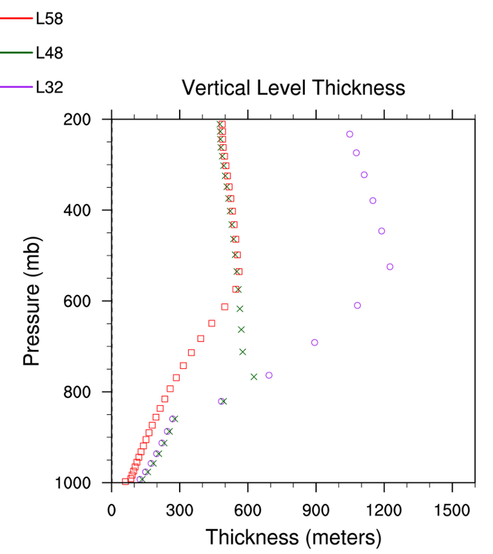

CESM Single Column Output#
Another option for examining CESM is to analyze single column (grid-point) (SCAM) experiments over different regions and time of year
ARM95 Centered over the DOE Atmopsheric Radiation Measurement (
ARM) facility during July/August 1995ARM97 Centered over the DOE Atmopsheric Radiation Measurement (
ARM) facility during June/July 1997TOGAII Centered over the West Pacific during part of the
TOGA-COAREcampaign during December 1992/January 1993GATEIII Centered over the Tropical Atlantic during part of the
GATEcampaign during August/September 1974
Data from the CESM atmosphere model CAM and the land model CLM used in SCAM model can be found here
/glade/work/rneale/ASP2023/data/cesm_scam
These files contain a multi-day period of output at high frequency (every 20 minutes). There is also a selection of vertical resolutions that have been used
32 levels in (
000.L32.cam) files48 levels in (
000.L48.cam) files58 levels in (
000.cam) files (GATE only has this one available)
These vertical level grids are documented in the figure below. This analysis is right at the cutting edge for CAM development as we are in the middle of ransitioned from 32 levels (L32) to L58 levels (L58). Crucially L58 has an additional 10 levels in the PBL.
Use a simple look tool first panoply to look through and contrast the diurnal variability in the continental Summertime cases (arm95, arm97) with the oceanic Wintertime cases (togaII, gateIII)
Note
Try installing panoply(here) locally on your laptop and move the small files above to your laptop to reduced cheyenne lateny

Things to look for#
Diurnal variation differences over land and ocean (timing of precipitation; temperature maxima)
Different PBL depths and properties at different resolutions
Vertical variaitons of conserved quantities (theta, humidity)
Comparison with observed profiles and theory (CBL, CLASS)